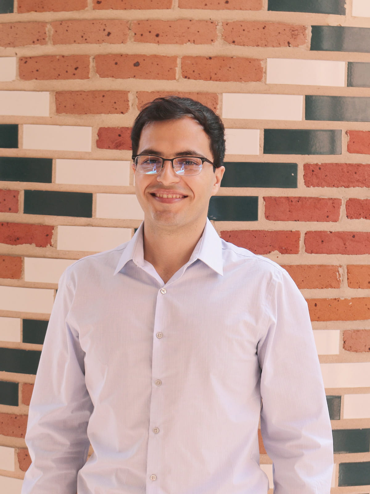

Home | Gallery of Research | Publications | Personal Interests
|  | My name is Mohammad Sarraf Joshaghani, and I am currently a
PhD student in the Department of Civil and Environmental at University of
Houston. I am part of the Computational and Applied Mechanics Laboratory (CAML) research group under the supervision of Professor
Kalyana Babu Nakshatrala.
My research interests include the following:
|